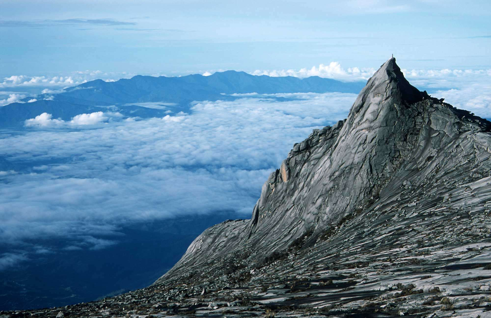

Once the world's tallest, these 88-story towers bear a modern Islamic design and a visitor skybridge.
Mount Kinabalu (Sabah)

13,435-foot mountain on a public nature preserve, offering rich flora and fauna, including orangutans.
A Famosa (Melaka)
It is among the oldest surviving European architectural remains in Southeast Asia and the Far East, however a hundreds years after the Portuguese, the Dutch had reconstructed and greatly alter the Porta de Santiago gate which is the only surviving part of the fortress today. The Porta de Santiago, a small gate house, is the only part of the fortress which still remains today.